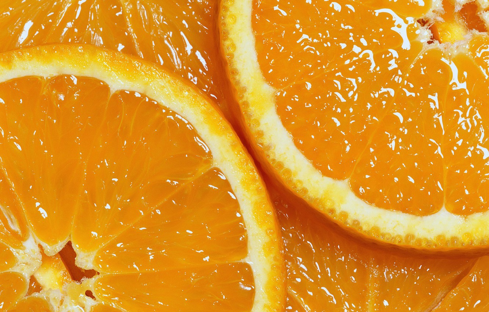
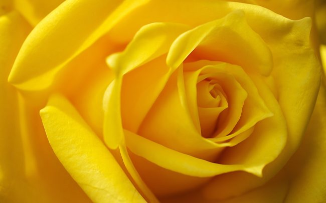
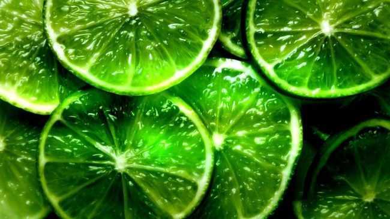
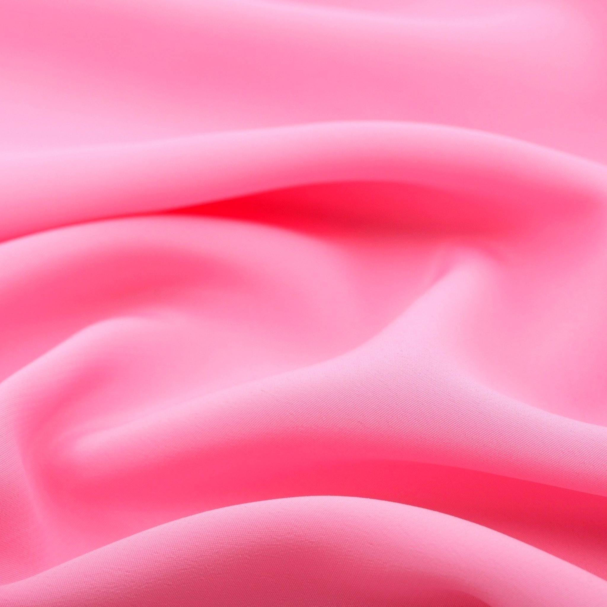
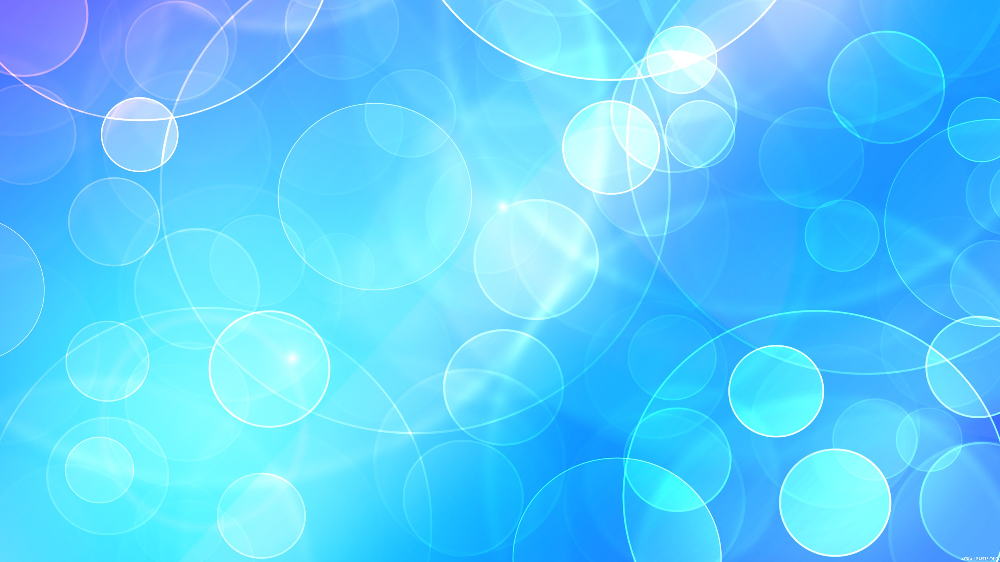
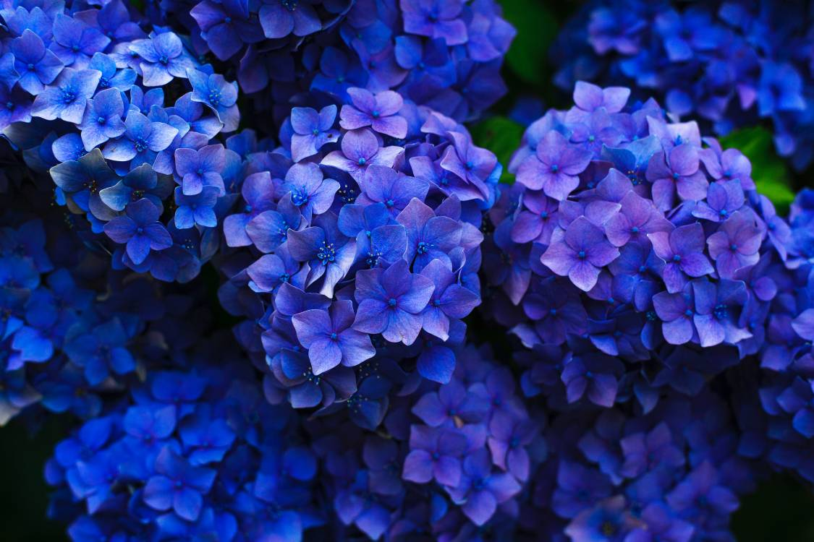
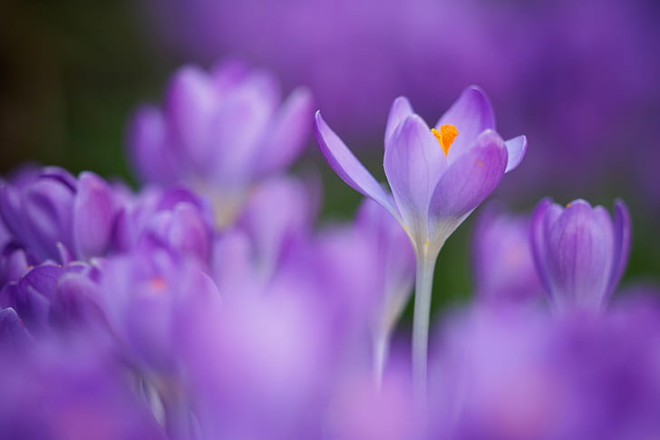
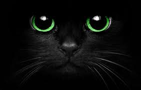
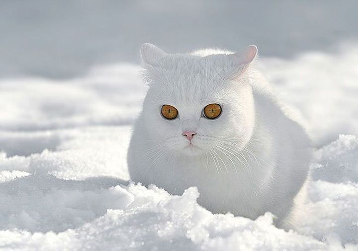

Важнейшее значение для эффективной рекламы имеет свет и цвет. Психологи считают, что свет бросает вызов человеку, призывает его к действию. Оттенки освещения вызывают у него различные настроения. Сочетание различных осветительных элементов должно обеспечить такую игру света и тени, чтобы способствовать показу товара в более выгодном свете, и наоборот, ослабить восприятие наименее эффективных его атрибутов.
Психологические исследования показали, что витрина магазина с освещением в 800 люксов вызвала интерес у 5 из 100 прохожих, при освещенности в 1200 люксов «задержались» 20 человек, а освещенность в 2000 люксов привлекли внимание уже 25 прохожих. Установлено: чем слабее источник света, тем гуще вызываемая им тень, результатом чего является утомление посетителя в его стараниях рассмотреть светлые и затемненные стороны рекламируемого товара.
Занимаясь подготовкой плаката, буклета или другой печатной рекламы, очень важно хорошо продумать дизайн: правильно расположить текст, найти эффектную картинку и выбрать ту цветовую гамму, на фоне которой реклама товара будет восприниматься наилучшим образом.
Согласно результатам, полученным в ходе многочисленных психологических экспериментов, учеными был сделан вывод, что цвет определенным образом влияет на восприятие человеком веса тела, температуры помещения и оценку удаленности объекта.
Так, красный, желтый, оранжевый цвета визуально приближают предмет, увеличивая его объем и как бы «подогревая» его. Голубой, синий, фиолетовый, черный — визуально отдаляют объект, уменьшают и «охлаждают» его. Поэтому, выбирая тот или иной цвет для рекламы товара, следует оценить его с точки зрения этих параметров.
Восприятие цвета зависит от эмоционального состояния человека. Именно этим объясняется то, что человек, в зависимости от своего эмоционального состояния, расположен к одним цветам, равнодушен к другим и не приемлет третьи. Эти закономерности открыл Макс Люшер в середине XX века. Создавая свой цветовой тест, Люшер исходил из того, что восприятие цвета у человека сформировалось в результате образа жизни и взаимодействия с окружающей средой на протяжении длительного периода исторического развития.
Сначала жизнь человека определялась главным образом двумя факторами, не подлежащими произвольному изменению: ночью и днем, светом и тьмой. Ночь означала условия, когда активная деятельность могла прекращаться. День требовал активных действий — поиска пищи, элементарного обустройства. Отсюда темно-синий цвет ассоциировался с ночным покоем, а желтый — с солнечным днем и его заботами. Красный цвет напоминал о крови, пламени и связанных с ними ситуациях, требующих высокой мобилизации, активности.
Отношение к цвету определялось характером жизнедеятельности многих поколений, обретая устойчивость, а любое проявление жизнедеятельности, в свою очередь, всегда сопровождалось тем или иным эмоциональным состоянием. Поэтому и отношение к цвету всегда было и остается эмоциональным.
Кроме того, Люшером был сделан еще один важный для рекламной индустрии вывод — цвет не только вызывает соответствующую реакцию человека в зависимости от его эмоционального состояния, но и определенным образом формирует его эмоции.
Красный — настраивает на решительность, способен вызвать у человека сильное желание совершить тот или иной поступок и, применительно к теме нашего разговора, сделать энергичное усилие и купить, к примеру, рекламируемый товар. Данный цвет, как никакой другой, способен быстро привлечь к себе внимание, зафиксировать взгляд на предмете рекламы. Семантика этого цвета — «внимание, не проходите мимо, действуйте ради действия: дерзко, необдуманно, поддайтесь первым чувствам» . Красный цвет также обладает и определенным сексуальным зарядом. Это особенно необходимо учесть тем, кто рекламирует продукцию, адресованную мужчинам, для которых красный цвет всегда был знаковым.
Однако не стоит излишне переоценивать этот цвет: он хорош в меру. Так, небольшая деталь объявления или каталога, выделенная красным, будет уместна и сразу привлечет к себе внимание, в то время как чрезмерное его использование способно вызвать у потребителя агрессивность и даже раздражение предметом рекламы.
Оранжевый — помогает вызвать прилив жизненных сил, дает оптимистический тонус. Древние считали его цветом здоровья и творчества. Данный цвет лучше всего использовать в рекламе медикаментов, детских товаров, а также услуг в области здравоохранения и образования. Оранжевый цвет прибавляет активности, но при этом дает ощущение внутреннего равновесия и душевной гармонии.
Желтый — настраивает на коммуникабельность. Это цвет открытости и общительности. А еще он помогает придать уравновешенность разгулявшимся эмоциям, обрести внутреннее спокойствие, утихомирить душевное волнение. Кроме того, желтый способен «наделить» предмет интеллектом, поэтому, например, рекламу товаров типа «хайтек» лучше всего сделать в желтом цвете. Этот цвет будет удачен в рекламе детских товаров, услуг туристических фирм, а также рекламных и PR-агентств.
Зеленый — все смягчает, снимает остроту переживаний. Этот цвет оказывает целительное, расслабляющее действие. И будет уместен и эффективен в рекламе медикаментов, водоочистительных систем, стоматологических клиник и аптек, ветеринарных лечебниц, центров здоровья и охраны окружающей среды.
Розовый — прекрасный помощник в сфере личных отношений: он усиливает чувства, делает нас более внимательными, ласковыми и чуткими. Диапазон использования этого цвета может быть самым широким: от рекламы парфюмерной продукции, товаров для женщин и детей до услуг брачных агентств и семейных центров.
Голубой — тоже настраивает на область чувств, но более возвышенных, скорее платонических, нежели приземленных. Это цвет дружеской привязанности, родства душ. Голубой — цвет мира и всеобщей гармонии. Он дает возможность почувствовать незримую связь со Вселенной и способен придать предмету целостный вид, а вопросу или делу — глобальность и благоприятный исход.
Синий — помогает сконцентрироваться на самом необходимом: не расплыться по мелочам, не разбрасываться. Синяя деталь в каталоге или рекламном проспекте сразу привлечет к себе внимание и, в отличие от красной, никогда не вызовет отрицательных эмоций.
Фиолетовый — цвет внутренней сосредоточенности. Этот цвет способствует внутреннему углублению: он поможет абстрагироваться от всего ненужного в данный момент и сконцентрироваться на главной проблеме. Еще одна интересная деталь - фиолетовый хорошо стимулирует работу мозга и способствует решению творческих задач. Не случайно фиолетовый так любим людьми творческими. Поэтому, если вы рекламируете товар, с помощью которого хотите подчеркнуть креативность товара или ориентированы на предоставление услуг творческой элите, деталь в фиолетовом будет просто необходима!
Черный — цвет самопогружения: он помогает от всего отгородиться, замкнуться и сконцентрироваться на решении той или иной задачи. В то же время данный цвет способен настроить на меланхолию и уныние. В черном приходит ощущение одиночества и изоляции от окружающего мира. Именно поэтому данный цвет в печатной рекламе лучше не использовать. Эта рекомендация, разумеется, не распространяется на шрифт и таблицы. Как раз в отношении их-то, за редким исключением, лучше не экспериментировать.
Белый — цвет полной открытости, готовности воспринимать мир во всем его многообразии. А еще этот цвет хорош тем, что не несет никаких неприятных ощущений. Стоит лишь заметить, что моноиспользование данного цвета в печатной рекламе способно создать нейтральный эффект, когда потребителю рекламы просто сообщается информация о товаре, без установления каких-либо акцентов и приоритетов.
Интересно, что отношение к цвету в каждой стране свое, и существует даже своя национально-культурная специфика, которую необходимо учитывать, занимаясь разработкой рекламной кампании в той или иной стране.
В Америке красный цвет ассоциируется с любовью, желтый — с процветанием, зеленый — с надеждой, голубой — с верностью, белый олицетворяет чистоту, спокойствие, мир, а черный — символ сложности и чрезвычайной ситуации. В Австрии наиболее популярным является зеленый цвет, в Болгарии — темно-зеленый и коричневый, в Пакистане — изумрудно-зеленый, а в Голландии — оранжевый и голубой.
В целом, чем ближе к Востоку, тем большее значение придается символике цвета. Так, в Китае красный цвет означает доброту и отвагу, черный - честность, а белый, в отличие от общепринятого европейцами символа чистоты и святости, ассоциируется с подлостью и лживостью. Поэтому, занимаясь разработкой рекламной кампании, скажем, в Китае, нужно правильно выбрать цветовую гамму, иначе есть шанс быть неправильно понятым.
Что касается России, то излюбленным цветом у нас всегда был красный, который испокон веку ассоциировался с богатством и любовью. До сих пор ключевыми цветами, украсившими российский флаг, остаются красный, белый и синий (символ чистоты и духовного совершенствования) .
Интересна символика цвета в Японии, хотя здесь все несколько сложнее из-за того, что многое зависит и от формы цветового изображения. Очень любопытны данные относительно влияния цветовых и графических решений на эмоции человека. Принято считать, что вертикальные или горизонтальные прямые линии ассоциируются со спокойствием, ясностью и даже солидностью, а изогнутые — с изяществом и непринужденностью. Однако это справедливо только при определенных условиях. Например, чем чаще вертикальные и горизонтальные линии и чем контрастнее цвета, выбранные для их изображения, тем более неприятные ощущения они производят.
Незамысловатые и симметричные формы «прочитываются» гораздо быстрее других. Наиболее сложно воспринимаются фантастические, изощренные формы, лишенные явных ассоциаций. Они привлекают внимание, но способны вызвать непредсказуемое отношение.
Установлено, что символика отражения формы соответствует реальным ощущениям. Например зигзагообразная линия «^» передает впечатление резкого изменения, концентрации силы, быстрого высвобождения энергии. Так все народы графически изображают молнию. Несбалансированные формы вызывают ощущения дискомфорта, незавершенные формы человек стремится мысленно дорисовать, достроить.
Сильное эмоциональное воздействие определенных форм и цветовых сочетаний было замечено и освоено еще в глубокой древности. Цвет и форма целенаправленно использовались в психотерапевтических целях. Восприятие цвета и эмоциональное к нему отношение зависит главным образом от эмоционального состояния человека. Оказалось, что определенным эмоциональным состояниям человека соответствуют его устойчивые отношения к цвету, цветосочетаниям: одному цвету отдается предпочтение, другой не вызывает особых эмоций, третий вовсе отвергается.